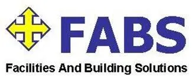
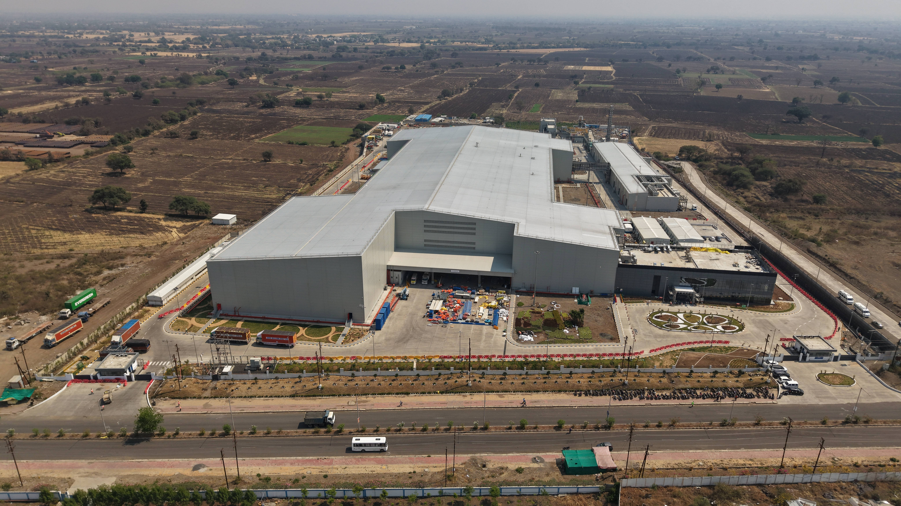
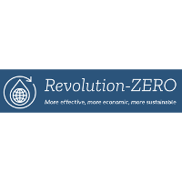
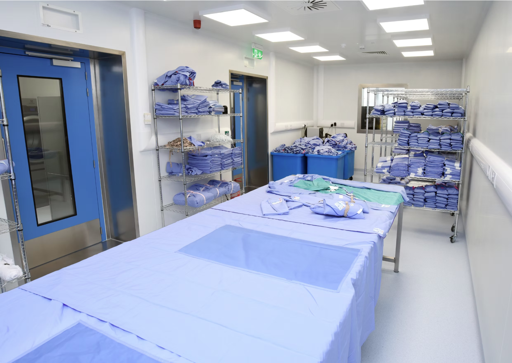
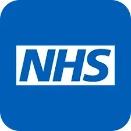

Professional Resume
8+ years of delivering engineering & operational excellence
Work Experience

Project Planner / Planning Engineer
October 2025 – Present | Pune, India
- Develop and maintain 3-tier schedules (L1-L3) across 30+ work packages, achieving 98% milestone compliance over 5 months.
- Coordinate daily/weekly lookaheads with 20+ subcontractor teams, reducing workfront conflicts by 30%.
- Track progress against baseline; identified 15+ float risks and escalated 4 critical delays, enabling recovery actions that saved ~3 weeks of potential slippage.
- Prepare daily, weekly, and monthly progress reports; reduced report generation time by 40% via standardized dashboards.
- Implemented progress measurement system covering 200+ activities, improving schedule variance tracking to within ±5%.
- Managed document control for 300+ drawings/submittals; achieved 100% revision traceability.




Technical Project Manager
November 2024 – July 2025 | Four Marks, Hampshire, UK
- Led end-to-end delivery of 2+ large-scale sterilization plant projects, combined CAPEX £3M+.
- Managed scope, schedules, budgets, technical coordination, and delivery milestones.
- Used AutoCAD to create, review, and update 2D technical drawings (layouts, fabrication, as‑built).
- Established KPIs, project reporting structures, and risk registers, improving visibility and decision-making.


IT Service Desk Analyst
May 2023 – July 2023 | Newcastle upon Tyne, UK
- 95% issue resolution rate during large-scale email migration; supported Azure, Exchange, M365, SCCM.

Project Manager - ERP Implementation
August 2022 – February 2023 | Newcastle upon Tyne, UK
- 10% efficiency improvement, projected £100k annual savings.
- Reduced project risks by 30%, shortened projected timeline by 15%.

Senior Student Inclusion Consultant
February 2022 – July 2023 | Newcastle upon Tyne, UK
- Helped improve student satisfaction outcomes by 20% through D&I initiatives.


Education
MSc Project Management
Northumbria University (2021–2023) – 2:1 (Commendation)Dissertation: “Investigating the Feasibility of Artificial Intelligence in Risk Management Practices” – Score 65
BE Mechanical Engineering
Savitribai Phule Pune University (2020) – DistinctionTechnical Skills
Primavera P6MS Project/PlannerJira/Asana/MondayAutoCAD
SolidWorks/CreoExcel/Power BIRisk ManagementKPI Tracking
Key Achievements
- Contributed to projects exceeding £90M+ cumulative value
- Managed £3M+ technical infrastructure projects
- Identified £100k annual savings via ERP improvements
- Reduced project risks by 30%
- 95% issue resolution at NHS
- Presented at RAISE 2022 & Jisc Change Agent Network 2023
- Co‑organised a TED Talk event at Northumbria Students' Union
Languages
English · Marathi · Hindi · German